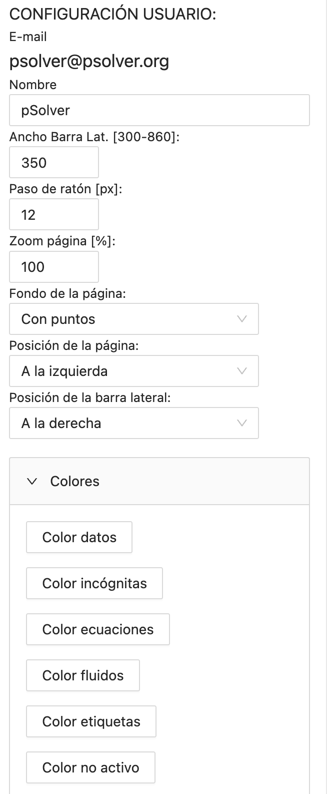

pSolver
pSolver
Manual de usuario
Actualizado a la versión 4.40
Índice
- Introducción
- Cuentas de usuario
- Lista de problemas
- Pantalla de trabajo
- Componentes de un problema
- Resolución de problemas
- Secciones
- Resolver multiples veces el problema
- Resolución numérica de ecuaciones diferenciales/integrales
- Expresiones matemáticas
- Autocorrección
- Actividades
Introducción
pSolver es una aplicación diseñada para facilitar la resolución de los problemas numéricos que usualmente se plantean en las disciplinas técnicas vinculadas con la ingeniería.
Cada uno de los problemas que gestiona la aplicación debe contener los componentes básicos que se necesitan para resolverlo. Estos componentes son:
- Datos
- Incógnitas
- Ecuaciones
La aplicación es capaz de resolver un sistema de ecuaciones no lineales, encontrando los valores de las incógnitas que satisfacen dichas ecuaciones.
Para añadir información complementaria y todo aquello que queramos incluir en el problema, tenemos dos componentes más:
- Textos
- Imágenes
Las propiedades físicas de los fluidos más usuales y las del aire húmedo (sicrometría) pueden obtenerse con dos componentes añadidos a la aplicación para este fin:
- Fluidos
- Aires húmedos
Para poder realizar análisis sobre los resultados obtenidos al variar algunos de los datos de entrada, la aplicación cuenta con dos componentes denominados:
- Tablas
- Gráficas
Todos estos componentes que el usuario puede crear, mover, editar, borrar y copiar/pegar, ayudan a la resolución ordenada del problema. De esta forma, el alumno puede centrarse en el adecuado planteamiento del problema, sin tener que dedicar tiempo y esfuerzo a la resolución matemática o la búsqueda de propiedades de fluidos en tablas.
La aplicación puede ejecutarse en cualquier navegador de última generación accediendo a la dirección http://psolver.org.
Se recomienda utilizar Chrome, Safari o Microsoft Edge. Con Firefox no está permitido el uso del portapapeles del sistema para copiar y pegar componentes, podemos activarlo siguiendo los siguientes pasos:
- Escribir "about:config" en la barra de navegación de Firefox.
- Aceptar el mensaje de "Aceptar el riesgo y continuar".
- Buscar "dom.events.testing.asyncClipboard" y ponerlo a "true".
Los problemas son almacenados de forma automática en una base de datos on-line (Google Firebase).
Cuentas de usuario
Cuando accedemos por primera vez a la aplicación aparece la siguiente página, en la que podremos elegir el idioma con el desplegable de la zona superior izquierda.

Pulsando los botones que aparecen podemos realizar las siguientes acciones:
- Iniciar sesión: Iniciar una sesión con nuestro usuario ya registrado.
- Registrarse: Permite crear una cuenta de usuario para el uso de la aplicación.
Si pulsamos el botón de registrarse aparecerá el siguiente dialogo para el registro:

Tras rellenar los campos con nuestros datos se mostrará el siguiente mensaje informativo:

Para terminar el proceso de registro debemos acceder a nuestro correo, donde recibiremos un mensaje con un enlace para verificar nuestra cuenta, se advierte que algunas veces el mensaje es clasificado como correo no deasado. Una vez hecho esto podremos iniciar la sesión con nuestro correo y contraseña.
El diálogo de inicio de sesión se muestra en la siguiente imagen, y nos permite, si hemos olvidado la contraseña, que se nos envíe un correo para establecer una nueva contraseña.

La próxima vez que accedamos a la aplicación con el mismo ordenador y navegador accederemos directamente sin necesidad de introducir de nuevo el usuario y la contraseña. Si queremos que esto no ocurra, lo cual es muy recomendable si el ordenador no es nuestro, debemos de cerrar la sesión antes de finalizar.
El programa permite hacer un problema sin tener ningún usuario pulsando el botón "Problema en blanco" que aparece en la ventana de inicio. Podremos trabajar normalmente con el problema pero nada quedará guardado en la base de datos. Si utilizamos el botón "Problema con ID conocido", nos pedirá el ID (es un número identificativo del problema que más adelante veremos como se obtiene) de un problema ya existente y nos permitirá trabajar con él, pero igualmente que antes, no guardará ninguna de las modificaciones que realicemos. También es posible trabajar sin usuario registrado cargando un problema desde un archivo local (almacenado en el ordenador del usuario).
En el caso de trabajar en una problema sin estar registrado como usuario encontraremos en la parte superior derecha de la barra de botones, un botón que nos permite guardar al disco local el problema actual (se utiliza el formato json).
Cuando creamos una nueva cuenta el tipo de usuario será "Estándar (estudiante)" con un número máximo de problemas de 50. Si quieres cambiar tu tipo de usuario a "Profesor" o aumentar el nº de problemas máximos, debes escribir un correo a psolver@psolver.org solicitándolo.
Lista de problemas
Tras acceder a nuestra cuenta se nos muestra la siguiente pantalla donde podemos ver nuestra lista de problemas.

En esta pantalla es donde se realiza la gestión de los problemas del usuario. Podemos crear un nuevo problema usando el botón .
Para cada uno de los problemas se muestra a la izquierda un check para poder seleccionarlo y a la derecha el icono que permite cargar el problema para trabajar con él. Si seleccionamos un problema usando el check podremos eliminarlo o duplicarlo usando los iconos que aparecen encima de la lista.
La lista de problemas puede ordenarse según diferentes criterios (Fecha de modificación, categoría o nombre) usando la lista desplegable. La categoría de cada problema se muestra como una etiqueta de diferentes colores para cada uno de los problemas.
El desplegable "Filtro" permite realizar un filtro por categoría, de forma que únicamente se mostrarán en la lista los problemas de las categorías seleccionadas por el usuario, o realizar un filtro según el tipo de problemas: normales, enunciados, soluciones o actividades (ver el apartado "Actividades")
El resto de botones que aparecen en esta ventana tienen las siguientes funciones:
- : Configuración de usuario, permite modificar el nombre.
- : Cerrar sesión de usuario.
- : Cursos y actividades: Solicita el ID de un curso para poder registrase en el o el ID de una tarea para crear una actividad. (ver el apartado "Actividades").
- : Copiar problema: Solicita el ID de un problema y realiza una copia del mismo en nuestra cuenta. Permitiendo copiar problemas entre diferentes usuarios.
- : Descargar problemas seleccionados a un archivo: Realiza una copia de seguridad de los problemas seleccionados en un archivo (se utiliza formato json).
- : Importar problemas desde archivo: Carga los problemas (ó problema) de un archivo local en nuestra cuenta.
- : Editar categorías: Permite modificar el nombre y/o color de las categorías existentes.
Pantalla de trabajo de un problema
Cuando pulsamos en el botón de la flecha en un problema concreto entramos en la pantalla de trabajo de dicho problema.
La pantalla de trabajo consta de 3 zonas principales:
- La barra de botones en la zona superior
- La zona central, que representa nuestro problema en papel, es donde se irán colocando los diferentes componentes creados por el usuario
- Una barra lateral derecha de edición de componentes. Su contenido cambiará en función del componente que tengamos seleccionado.

Para ajustar los parámetros de visualización de la pantalla de trabajo podemos usar el botón . Los parámetros que podemos modificar se muestran en la barra lateral de configuración y serán recordados por cada uno de los diferentes exploradores que usemos. Además del ancho de la barra lateral , su posición, el zoom de la página y su posición, podemos modificar el "Paso de ratón" en pixels que permite desplazar los componentes a saltos de ese tamaño, facilitando la colocación y alineación de los mismos. También podremos cambiar el fondo blanco de la página, por un fondo cuadriculado o con puntos. Por último, podemos cambiar el color del texto utilizado para los diferentes componentes: datos, incógnitas, ecuaciones, propiedades de fluidos o aire húmedo, las etiquetas de las imágenes, tablas y gráficas y los componentes "no activos".
En la zona superior, fuera del papel, podemos ver el nombre del problema, su categoría y su descripción. Si pulsamos sobre el nombre aparecerá en la barra lateral de edición de las propiedades generales del problema, como la que se muestra en la siguiente figura:

Usando esta pantalla podemos cambiar el nombre, descripción, la categoría y el tamaño/orientación de las páginas. Con el check "privado" bloqueamos el problema, de tal forma que el problema no podrá ser visto o copiado por otros.
Si queremos crear un nuevo tipo de categoría debemos hacerlo usando el desplegable "crear nueva categoría",donde podremos elegir un nombre y color de la categoría para posteriormente pulsar el botón "Añadir".

En el desplegable "Formato numérico" podemos modificar el número de cifras significativas que se utilizará en este problema, por defecto son 4. Son configurables también el valor por debajo del cual se redondeará a cero, y los valor mínimos y máximos para cambiar la notación de decimal (se usa el punto como separador decimal) a notación exponencial o científica.

Podemos ver también las fechas de creación y última modificación del problema y el ID del problema. El ID es una combinación de letras y números que identifica de forma unívoca al problema y que podremos copiar para enviar el problema a otro usuario. El e-mail del autor original del problema se corresponde al usuario que creo el problema, este e-mail se mantendrá cuando realicemos copias del problema.
Además del botón de configuración podemos ver el desplagable "Nuevo" que nos permite crear cada uno de los diferentes componentes de un problema, que explicaremos detenidamente en la siguiente sección. A continuación encontramos los botones destinados a editar los componentes del problema:
- Eliminar: Elimina el/los componente/s seleccionado/s.
- Activar/desactivar: Activa ó desactiva los componentes seleccionados.
- Enviar al fondo: Cuando dos componentes ocupan el mismo espacio sobre la hoja podemos enviar al fondo el componente seleccionado.
- Cortar: Elimina y guarda en el portapapeles los componentes actualmente seleccionados para poder pegarlos posteriormente. Podrán pegarse en el mismo problema o en otro problema.
- Copiar: Guarda en el portapapeles los componentes actualmente seleccionados para poder pegarlos posteriormente. Podrán pegarse en el mismo problema o en otro problema.
- Pegar: Pega en el problema los componentes previamente almacenados en el portapapeles, el usuario debe de hacer click en el nuevo lugar donde quiera pegar los componentes.
- Reemplazar símbolo: Reemplaza un símbolo por otro introducido por el usuario, buscando en todos los componentes del problema.
- Buscar incógnitas: Revisa las ecuaciones y crea las nuevas incógnitas encontradas en ellas.
- Vista tabular: Muestra varias listas de los componentes principales (datos, incógnitas, ecuaciones, fluidos y aires húmedos) en formato de tabla.
Por último, podemos encontrar los botones relacionados con la resolución y gestión del problema:
- Resolver: Resuelve el problema, calculando las incógnitas.
- Resultados a valores iniciales: Toma como valores iniciales para la resolución los resultados actualmente calculados. Esta opción, como veremos más adelante, es muy interesante cuando surgen problemas de convergencia en la resolución del problema.
- Autocorrección: Esta opción permite corregir nuestro problema comparandolo con otro que debe ser el correcto. Más adelante puedes encontrar una sección sobre el tema.
- Imprimir: Imprime el problema.
La zona final de la derecha de la barra de botones podemos ver el icono , al dejar el ratón sobre él podemos ver el nombre de usuario registrado, y en el lado izquierdo el botón para volver a la lista de problemas o la pantalla inicial de registro.
Se puede realizar la selección de múltiples componentes manteniendo pulsado el ctrl (cmd en MacOS) y aplicar la acción a todos los componentes. También podemos seleccionar varios componentes haciendo click y arrastrando el ratón manteniendo pulsado el ctrl (cmd en MacOS), aparecerá una caja con el borde en línea discontinua.
Componentes de los problemas
Textos: Este componente nos permite insertar una caja de texto. A los textos podemos darle formato utilizando "Markdown". En este enlace se describe brevemente que es el Markdown y como se usa. En el siguiente enlace puedes ver un ejemplo con todas las posibilidades de formato que el Markdown ofrece dentro de pSolver: Problema con textos Markdown de ejemplo

Si añadimos un nombre de variable entre ??, por ejemplo ?? x_1 ?? se sustituirá por su valor si esta variable se correspoden con un Dato, una Incógnita, un Fluido o un Aire húmedo. Así, por ejemplo si x_1 es un dato que vale 2.34 m/s, en el texto aparecerá "2.34 m/s". Para los datos incluirá siempre el valor y la unidad sin cambiar de unidad y para las incógnitas incluirá el valor y la unidad ya cambiado de unidad, si este cambio existiera.
En al caso que que queramos forzar a que un dato o a una incógnita la unidad que debe ser usada, debemos añadir la unidad deseada entre corchetes. Por ejemplo: ?? T_1 [K] ?? buscará el valor de T_1 en K siempre que esta unidad sea la unidad original o la modificada.
Podemos añadir cuadros de texto o listas desplegables usando referencias a un componente "Cuestión" previamente creado. Para ello debemos escribir el símbolo del componente cuestión entre @@, por ejemplo @@ q_1 @@ se sustituirá por un cuadro de texto o una lista desplegable (en función del tipo de cuestión), que podrá ser rellenado por el alumno. El objetivo de este uso de las cuestiones es crear actividades con preguntas para que los alumnos las rellenen.
Datos: Este componente se usa para introducir los datos conocidos al comienzo del problema. El símbolo del dato es el nombre matemático del mismo y se formatea usando AsciiMath al igual que las ecuaciones, las propiedades de los fluidos y las incógnitas. En la sección Expresiones matemáticas se describe brevemente como usar este formato matemático. El valor de los datos puede ser un número, una expresión con números, una expresión que contenga otros datos o cuestiones anteriormente definidas ó una cadena de texto si la escribimos entre comillas, por ejemplo: "Agua". Este tipo de datos cadena de texto se pueden usar para los fluidos como veremos posteriormente.
La opción "Activo" que aparece en muchos componentes puede no seleccionarse, y en ese caso el programa no tendría en cuenta ese componente a la hora de resolvar el problema. Como veremos desactivar un componente para que la aplicación no lo utilice en su proceso de resolución puede ayudar a realizar una resolución ordenada del problema y mejorar así la convergencia de la resolución.
La opción "Borde" coloca una línea de borde alrededor del componente. El check bloquea el componente, impidiendo que pueda modificarse o borrarse. Los componentes bloqueados sólo pueden cambiarse de posición.
Podemos cambiar la unidad del dato utilizando el desplegable "Cambio de unidad" donde introducimos la unidad final y la expresión matemática para realizar el cambio de unidad (el dato en esta expresión siempre se llamará "x"). Por último el botón inferior permite convertir el dato en una incógnita.

Incógnitas: Este componente se usa para crear las incógnitas de nuestro problema cuyo valor será obtenido por la aplicación al resolver un conjunto de ecuaciones. Las incógnitas pueden ser creadas automaticamente por la aplicación si usamos el botón "buscar incógnitas" de la barra de botones.
Si una vez obtenido el resultado queremos cambiar la unidad de la incógnita podemos hacerlo utilizando el desplegable "Cambio de unidad" donde introducimos la unidad final y la expresión matemática para realizar el cambio de unidad (la incógnita en esta expresión siempre se llamará "y").
El desplegable "Parámetros de convergencia" lo comentaremos más adelante en la sección sobre convergencia de resultados. Podemos también encontrar un botón para convertir la incógnita en un dato.

Ecuaciones: Este es el componente con la que el usuario puede definir las ecuaciones de su problemas. Las ecuaciones deben de escribirse en formato AsciiMath y deben contener un único signo igual "=". En la sección "Expresiones matemáticas" puede encontrar un resumen de como se evaluan las expresiones presentes en la aplicación.

Imágenes: Componente que permite insertar imágenes que se encuentren accesibles en internet. El tamaño de las imágenes se controla con la propiedad "Ancho" que define el % del ancho de la página que debe ocupar la imagen.
Las tres opciones para insertar imágenes, se eligen en la propiedad "Tipo" y son:
- Dirección URL: Para esta opción en el "vínculo" debemos de incluir la dirección URL donde se encuentra la imagen que queremos mostrar. Recomendamos usar la aplicación postimages.org para almecenar imágenes de forma gratuita y sin necesidad de registro.
- Google Drive: Si la imagen está en nuestra unidad de Google Drive debemos compartirla y colocar la opción " Cualquier persona con el enlace puede ver la imagen". Copiamos el enlace que nos facilita Google Drive y lo pegamos en el campo "vínculo" .
- Dropbox: En el caso de tener la imagen almacenada en Dropbox, desde Dropbox creamos un enlace para que "Cualquiera que tenga el enlace pueda ver el archivo". Copiamos el enlace que nos facilita Dropbox y lo pegamos en la propiedad "vínculo".

Fluidos: Este componente permite obtener las propiedades físicas de muchos fluidos a través del uso de la librería Coolprop. Para obtener una propiedad es necesario definir un símbolo, seleccionar el fluido y facilitar el valor de dos propiedades físicas del mismo. Estos valores pueden ser números, datos, incógnitas o expresiones matemáticas que combinen los componentes anteriores.
En la lista de fluidos disponibles aparecerán todos los proporcionados por la librería Coolprop más todos los datos tipo cadena de texto que existen en el problema, por ejemplo si tenemos un dato f = "Agua", f aparecerá al final de la lista. Así cambiando el valor del dato cambiaremos el fluido utilizado de forma automática, si usamos datos tipo cadena podremos utilizar como nombre del fluido, además de los españoles listados en el desplegable, los nombres que usa Coolprop para los fluidos y los fluidos incompresibles.

Aire húmedo: Este componente permite obtener las propiedades sicrométricas del aire húmedo, para ello también utiliza la librería Coolprop. En este caso las propiedades a suministrar son tres en lugar de dos. Tanto a los fluidos como al aire húmedo podemos aplicarle un cambio de unidad, facilitando la unidad final y la expresión en función de "x".

Tablas: Las tablas son componentes que permiten resolver varias veces el problema planteado cambiando el valor de los datos para cada una de las filas de la tabla. Las tablas son tratadas en más detalle en el apartado "Resolver múltiples veces el problema".
Gráficas: Las gráficas permiten representar usando gráficas de líneas los valores obtenidos con las tablas. Las veremos más detenidamente en el apartado "Resolver múltiples veces el problema".
Secciones: Este componente permite dividir el problema en partes (secciones) independientes como si se tratará de diferentes subproblemas. De esta manera podemos cambiar el valor los datos y las incógnitas usando los mismos símbolos en secciones distintas del mismo problema. Se explicará con más detalle en el apartado "Secciones".
Cuestiones: Este componente permite añadir cuestiones al problema. Las cuestiones sólo podrán ser creadas los usuarios tipo "Profesor". Las cuestiones definen cuadros de texto o listas desplegables que posteriormente podrán ser incluidos en los componentes "Texto" como preguntas rellenables por parte del alumno.
Edición rápida
Para los textos, datos, incógnitas y ecuaciones puede usarse la edición rápida (in situ) del componente. Al hacer doble click ó pulsando "Enter" sobre un componente seleccionado se activa la edición in situ del mismo. Consiste en un cuadro de texto justo debajo del componente que el usuario puede editar, pulsando "Enter" ó "Escape" para finalizar la edición.
Para el caso de los datos, tal y como vemos en la imagen siguiente, se muestra el símbolo, un igual, el valor o expresión del dato y las unidades entre corchetes. El usuario puede modificar cualquiera de los tres campos y pulsar Enter para finalizar. En el caso del Texto para salir de la edición debe pulsar Escape, ya que con Enter introduce una nueva línea en el texto.

Vista tabular
Utilizando el botón entramos en la visión tabular del problema.

En esta pantalla se mostrará una lista de los datos, incógnitas, ecuaciones, fluidos o aires húmedos presentes en nuestro problema, en función de lo seleccionado en la lista desplegable que vemos arriba a la izquierda.
Esta opción está diseñada para poder revisar detenidamente todos los componentes de nuestro problema. Si algún componente tiene un error el primer campo aparecerá en rojo. Dentro de esta pantalla únicamente podremos eliminar el componente pulsando sobre la palabra "Eliminar" de la columna Acción o editar el componente pulsando su fila (la barra lateral de edición es la misma que la de la pantalla principal del problema).
Resolución de problemas
Para resolver el problema debemos de pulsar el botón "resolver" , la aplicación comprueba si el número de ecuaciones es igual al número de incógnitas. En algunas ocasiones no es capaz de obtener una solución y muestra un mensaje parecido el siguiente:

Por ejemplo, si intentamos resolver la ecuación ln(0.5 - x ) = 1, no obtiene solución debido a que el proceso iterativo de resolución comienza evaluando los dos miembros de la ecuación con unos valores iniciales, que para este caso es x = 1. Cuando intenta calcular el logaritmo neperiano de 0.5 - 1 = -0.5 obtiene un error (como sabemos el logaritmo neperiano de un número negativo no existe).
Para resolver esto debemos de cambiar el valor inicial de x. En el desplegable "Parámetros de convergencia" que aparece en la edición de las incógnitas y los fluidos. En este desplegable podemos cambiar el valor inicial, el valor mínimo y el valor máximo, ayudando así al proceso de convergencia a encontrar solución. En nuestro caso anterior si ponemos valor inicial "-1" vemos como encuentra solución.
Cuando aparecen problemas de convergencia deben de revisarse los valores iniciales de las incógnitas. Una buena opción es ir resolviendo las ecuaciones por bloques e ir tomando como valores iniciales los resultados que vamos obteniendo, usando para ello el botón "resultados a valores iniciales".

Secciones
Cuando añadimos un componente sección podremos ver el texto "Fin Sección: n" y una línea horizontal que podemos colocar a la altura que queramos marcando la división entre las diferentes secciones del problema. Cuando pulsamos en cualquier componente o zona libre del papel podremos ver en la zona superior una etiqueta que nos muestra la sección actual, que será la que podemos resolver.
Este componente permite tener datos, incógnitas y fluidos con el mismo símbolo en las diferentes secciones del problema, y poder así resolver diferentes subproblemas dentro del mismo problema.

Haciendo click sobre la etiqueta de sección que aparece en la parte superior derecha, podemos convertir la sección el global. Las secciones globales tienen la eqtiqueta en rojo y se les añade (G) para distinguirlas.
Todas los datos, incógnitas, ecuaciones, fluidos y aires húmedos de las secciones globales serán incluidos en todas las otras secciones cuando procedamos a su resolución. Si tenemos componentes comunes a todas las secciones la forma más adecuada de hacerlo es crear una sección global y meterlos todos en ella.

Resolver multiples veces el problema
En lo descrito hasta ahora en el manual hemos explicado como se resuelve un problema dado una única vez. Para resolver varias veces el problema planteado debe de utilizarse el componente "Tabla".
El paso previo a crear una tabla debe ser crear un problema y resolverlo con unos valores iniciales de los datos que después podremos variar usando la tabla. Tras crear la tabla, además de definir el nº de filas (nº de veces que se resolverá el problema) y el nº de columnas, debemos de definir que contendrá cada una de las columnas.

En cada una de las columnas debemos de escribir el símbolo de alguno de los datos, incógnitas, fluido o aire húmedo de nuestro problema. Únicamente para los datos podremos añadir un símbolo = y una expresión para definir cuanto valen estos datos para cada una de las filas de la tabla. Si el símbolo de nuestro dato fuera T_1, las posibilidades serian las siguientes:
- T_1 : Para todas las filas el dato T_1 vale lo especificado en su definición, en este caso 10.
- T_1 = 25 : Para todas las filas el dato T_1 vale 25. Podríamos poner también una expresión en función de las variables del problema, por ejemplo, T_1 = T_2 / 10, tomaría como valor de T_1 el calculo de T_2/10, es decir 2, y lo usaría para todas las filas.
- T_1 = 10, 12, 14, 15, 18 : Los valores separados por coma se usarán por orden para cada una de las filas de la tabla. Si el número de filas el mayor que el número de valores especificados se repetirá el último hasta el final de las filas. Como se muestra en el siguiente apartado en este caso podemos poner como primer valor una expresión calculada usando las variables del problema y a partir del segundo valor la expresión se evalua con los valores del problema la fila anterior.
- T_1 = 10 -> 50 : El valor de la primera fila es 10 y el de la última 50 y los valores intermedios se calculan interpolando linealmente. Tanto 10 como 50 podrían ser una expresión de variables del problema.
- T_1 = 10 @ 5 : El valor de la primera fila es 10 y las filas siguientes se incrementan en 5. Para este ejemplovlos valores serian 10, 15, 20, 25 y 30. Tanto 10 como 5 podrían ser una expresión de variables del problema.
Los datos especificados por el usuario se suponen que están sin cambiar de unidad, el cambio de unidad será aplicado para cada dato antes de resolver el problema. Las incógnitas, Fluidos y Aires húmedos se mostrarán en la tabla en su unidad final una vez modificada, si es que existe cambio de unidad.
Podremos especificar una nueva variable que no esté definida en el problema y añadirle un igual y los valores o expresiones separados por comas que queremos que tome en cada una de las filas de la tabla. Esta variable se añadirá al problema y se resolverá junto con el resto de los componentes del problema. Por ejemplo, si añadimos una columna con la variable "T_3 = T_1, T_2, 24 [ºC]" se añadirá al problema la variable T_3 que tomará el valor de T_1 para la primera fila, el valor de T_2 para la segunda fila y 24 para el resto de filas. La unidad puede especificarse entre corchetes al final de la expresión. Esta opción nos permite crear variables y asociarlas a gráficas con valores que están definidos en el problema.
Una vez definidas todas las columnas pulsaremos el botón "Calcular" para obtener los valores de todas las filas resolviendo el problema tantas veces como filas tengamos. Si activamos el check "Recalcular tabla al resolver" se recalculará la tabla cada vez que resolvamos el problema (o la sección en la que se encuentre la tabla). El botón "Exportar a CSV" nos permite exportar los valores de la tabla a un archivo que posteriormente podremos usar en nuestro ordenador.
Tras crear una tabla es posible crear un componente "Gráfica" para representar alguno de las columnas de la tabla. En las gráficas se espicifica el ancho de la misma como un porcentaje del ancho de la página. Y para cada una de las series de datos que deseemos representar, en el desplegable "Tabla de datos" debemos de elegir que tabla contiene los datos de esa serie.
En la zona de "EJES" disponemos de propiedades para poner nombre a los ejes y especificar sus valores mínimos y máximos. Y en el área "SERIES" se define cuantas series de datos queremos graficar, introduciendo nombre de cada serie, el símbolo que usará como "x" en la gráfica y el que usaremos como "y". Las propiedades "Color", "Símbolo" y "Línea" nos permiten personalizar el aspecto de la representación de cada una de las series, pudiendo utilizar un eje secundario para la "y".

Resolución numérica de ecuaciones diferenciales/integrales
Utilizando el componente tabla podemos resolver numéricamente ecuaciones diferenciales/integrales. Para ello se ha implementa la posibilidad de que los datos puedan definirse en función de variables calculadas en la fila anterior de la tabla.
Para explicar esta utilidad vamos a utilizar un ejemplo sencillo del cálculo de la posición en un movimiento con aceleración constante. Al montar la tabla definimos los datos usando expresiones de la fila anterior:

Como podemos apreciar realizamos el cálculo de la posición y velocidad final de un instante, a partir de la velocidad y posición inicial:
- t = 1, t+1 : El dato t valdrá 1 para la primera fila y "t+1" para las siguientes, t lo tomará de la fila anterior.
- v_i = 0, v_f : El dato v_i (velocidad inicial) valdrá 0 para la primera fila y "v_f" (velocidad final) para las siguientes filas, v_f lo tomará de la fila anterior.
- x_i = 0, x_f : El dato x_i (posición inicial) valdrá 0 para la primera fila y "x_f" (posición final) para las siguientes filas, x_f lo tomará de la fila anterior.

Con esta utilidad podrán resolverse problemas diferenciales y/o integrales. Este tipo de problemas aparecen muchas veces en los comportamientos dinámicos de problemas que varían con el tiempo o en los problemas espaciales resueltos por elementos o diferencias finitas.
Expresiones matemáticas
Las expresiones matemáticas que escribimos en datos, ecuaciones, fluidos y aires, se evaluan utililizando la librería expr-eval.
En la página web de esta librería podemos encontrar un apartado llamado "Expression Syntax" donde se describe como deben ser escritas las expresiones para ser procesadas correctamente.
Los nombres de las variables deben ser cadenas de caracteres (se diferencia entre mayúscula y minúscula) sin ningún espacio. Para utilizar subíndices emplear "_". "pi" y "e" son dos constantes numéricas precargadas y no deben de usarse como nombres de variables.
Precedencia de operadores
| Operador | Descripción |
|---|---|
| (...) | Agrupar |
| ! | Factorial |
| ^ | Exponenciación |
| *, /, % | Multiplicación, división, resto |
| +, - | Suma, resta |
| ==, !=, >=, <=, >, < | Igual, no igual, mayor o igual, menor o igual, mayor, menor |
| and | AND lógico |
| or | OR lógico |
Funciones
Las funciones que se muestran en la siguiente tabla son las funciones predefinidas más usuales.
| Función | Descripción |
|---|---|
| abs(x) | Valor absoluto de x |
| acos(x) | Arco coseno de x (en radianes) |
| acosh(x) | Arco coseno hiperbólico de x (en radianes) |
| asin(x) | Arco seno de x (en radianes) |
| asinh(x) | Arco seno hiperbólico de x (en radianes) |
| atan(x) | Arco tangente de x (en radianes) |
| atanh(x) | Arco tangente hiperbólico de x (en radianes) |
| cbrt(x) | Raiz cúbica de x |
| ceil(x) | El número entero más pequeño que es >= x |
| cos(x) | coseno de x (x en radianes) |
| cosh(x) | coseno hiperbólico de x (x en radianes) |
| exp(x) | exponencial de x, es igual a e^x |
| floor(x) | El número entero más grande que es <= x |
| ln(x) | Logaritmo neperiano de x |
| log(x) | Logaritmo neperiano de x, es igual a ln(x) |
| log10(x) | Logaritmo decimal de x |
| log2(x) | Logaritmo en base 2 de x |
| round(x) | Se redondea x al entero más cercano |
| sign(x) | Signo de x (-1, 0, o 1 para x negativo, cero ó positivo respectivamente) |
| sin(x) | Seno de x (x en radianes) |
| sinh(x) | Seno hiperbólico de x (x en radianes) |
| sqrt(x) | Raiz cuadrada de x |
| tan(x) | Tangente de x (x en radianes) |
| tanh(x) | Tangente hiperbólica de x (x en radianes) |
| random(n) | Número aleatorio entre [0, n) |
| min(a,b,…) | Mínimo de una serie de valores (a,b,...) |
| max(a,b,…) | Máximo de una serie de valores (a,b,...) |
| if( x>0, v1, v2) | El primer parámetro es la condición evaluada si es cierta se toma v1 y si es falsa v2. Ejemplo: if( x>8 , 1 , 0) = 1 (si x = 10) |
| at(x,[l1,l2],[v1,v2,v3]) | Evalúa x, si x > -infinito y x <= l1 devuelve v1, si x > l1 y x <= l2 devuelve v2 ,y si x > l2 devuelve v3. |
Autocorrección
Explicaremos el uso de esta opción sobre un problema de ejemplo en el cual se calienta agua añadiéndole un calor a presión constante, en la siguiente figura podemos ver el problema realizado por un alumno:

Utilizando el botón podemos corregir nuestro problema comparándolo con otro que dede ser el correcto. En el campo superior introducimos el ID del problema correcto y pulsamos el botón corregir.
En la tabla aparecerá un listado con las variables (datos, incógnitas, fluidos y aires húmedos) del problema correcto y comparandolas con las variables del problema propio. Las variables del problema correcto tienen dos niveles: Principal y Secundaria. Las variables principales son las incógnitas fundamentales del problema y se marcan en el problema correcto poniendoles un borde. Es posible corregir también datos tipo texto, recordemos que son aquellos que su valor está entre comillas, si por ejemplo, creamos un dato a = "sube", se comparará con el dato del mismo nombre en el problema correcto. En el problema correcto podemos poner más de una solución correcta si las separamos por comas, por ejempl a ="sube", "crece". Así cualquiera de esas dos palabras se considerarian correctas.
El filtro "Mostrar" permite quedarnos únicamente con las variables principales.

En la última columna se muestra el resultado de la comparación:
- Se encontró la varible y su resultado es correcto (igual al del problema correcto).
- Se encontró la variable pero su resultado no coincide con el correcto.
- No se encuentra ninguna variable con ese nombre en el problema propio.
En nuestro ejemplo de la figura podemos observar que tenemos dos errores, primero que la variable con el caudal volumétrico en el problema correcto se llama "dotV_e" y el nuestro probablemente tenga otro nombre (en este caso "V_e"). El segundo error es que el dato "Q" vale 20 kW en nuestro problema y el correcto es 21 kW, esto hace que tanto "h_s" como "T_s" que son resultados de la resolución estén también mal. Tendriamos que volver a nuestro problema y cambiar el valor de "Q".
Una vez realizados estos dos cambios y volviendo a la resolver el problema podemos ver como todas la variables de nuestro problema son correctas.

Actividades
Las actividades son un tipo de problemas pensados para poder mandar a los alumnos y que estos las realicen individualmente. Pueden por lo tanto utlizarse para poner tareas o hacer exámenes.
Para poder poner actividades tu tipo de usuario debe ser "Profesor", si quieres convertir tu cuenta de Estudiante en una cuenta de profesor debes de enviar un correo solicitándolo a psolver@psolver.org.
Desde la cuenta de profesor además de la lista de problemas puedes ver la lista de cursos y la lista de tareas, usando el desplegable "Mostrar".

En la lista de cursos podremos crear, duplicar y borrar cursos. Los cursos son listados de estudiantes registrados en pSolver a los cuales podemos mandarles actividades para que las realicen. Usando el botón podemos cargar un curso externo que ha sido creado por otro profesor, esto nos permitirá poner tareas sobre cursos creados por otros profesores.
Si pulsamos el botón de editar curso veremos la siguiente pantalla en la cual podremos cambiar el nombre y la descripción del curso y añadir o borrar miembros de un curso usando el e-mail con el que se registraron los estudiantes. También existe la posibilidad de que el alumno se registre él sólo si le enviamos el ID del curso, utilizando el botón que aparace en la barra de botones de la lista de problemas.

Posteriormente el profesor debe de crear la tarea que se mandará en forma de actividad al alumno. Para ello dispone igualmente de la lista de tareas que puede crear, duplicar, borrar o editar.

Editando la tarea podremos ponerle nombre, descripción, seleccionar el curso al que pertenece y establecer el ID del problema que se usará como enunciado y el de la solución. Con el botón "Enviar a todo el curso", se crea una actividad en las cuentas de cada uno de los miembros del curso, copiando el contenido del problema "enunciado", el sistema comprueba si el alumno ya tiene esa actividad para no duplicarla. También es posible que el alumno cree la actividad por su cuenta, si le mandamos el ID de la tarea, utilizando el botón que aparace en la barra de botones de la lista de problemas.

Inicialmente las actividades no incluyen la posibilidad de que el alumno pueda autocorregirse, pero usando el botón "Activar autocorrección" podemos activar esta posibilidad para todos los alumnos en la tabla de actividades.
Las actividades que los alumnos deben realizar son en realidad problemas que tiene las siguientes particularidades:
- Únicamente permite copiar/pegar componentes desde la misma actividad.
- No está permitido hacer copias ni ver la actividad por parte de terceros (son privados).
- En la parte superior del problema se describe si la actividad está entregada o no, y en caso afirmativo la fecha de entrega.
- A la derecha del nombre del problema aparece un enlace para poder entregar la actividad. Tras entregar ninguno de los cambios que el alumno realice se guardarán. Es decir, el problema aparecerá en el estado en el que se entregó cada vez que se reabra.

La figura anterior muestra la actividad cuando el alumno la inicia. El alumno debe de hacer el problema prestando especial atención a crear las incógnitas que el enunciado establece con el mismo nombre y unidad, ya que la corrección se realizará comparando las incógnitas principales de la actividad y de la solución que el profesor colocó en la tarea. En la siguiente figura se muestra la actividad realizada por alumno, con el error de haber llamado φ a la variable γ.

Si volvemos a la tarea y pulsamos el botón "Actualizar tabla", aparecerá el listado de las actividades realizadas por los alumnos y la corrección de las variables principales, mostrando si son correctas, incorrectas o no han sido encontradas. Seleccionando una actividad concreta con el check de la primera columna y usando el botón "Ver actividad seleccionada" podremos ver la actividad del alumno. Usando el botón inferior "Exportar a CSV" descargamos un archivo que contiene la tabla en formato compatible con cualquier hoja de cálculo.

Actividades con cuestiones
Las cuestiones son componentes que se pueden añadir a las actividades y que permiten al profesor realizar preguntas al alumno sobre el problema. Estas preguntas pueden ser de tipo texto o de tipo lista desplegable.

El componente cuestión no será visible por el alumno cuando se le envíe la cuestión, por tanto, las cuestiones deben de ser incluidas en textos haciendo referencia a sus símbolo y rodeandolas de @@. Por ejemplo para insertar la cuestión q_1 en el texto debemos escribir @@ q_1 @@.

Al igual que con todas las actividades el profesor debe de crear el enunciado, que será el que se le enviará al alumno cuando se cree la actividad, y la solución, que se usará para corregir la actividad. En el enunciado el valor de la cuestión debe de dejarse vacío y en la solución debe de incluirse el valor correcto de la cuestión.
Para las cuestiones tipo texto con varias soluciones posibles, el profesor puede incluir en el valor las diferentes soluciones correctas separadas por comas. Cuando se realiza la corrección las diferencias entre mayúsculas y minúsculas no son tenidas en cuenta. El campo "Lista de valores numéricos" se usará si algún dato hace referencia a la cuestión.

pSolver :: Grupo de usuarios :: twitter